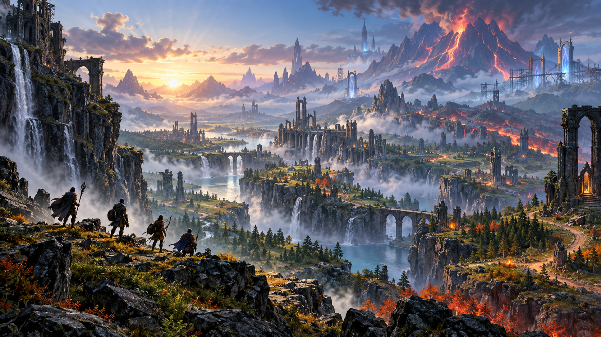

Jagex Announces New RuneScape MMO RS4
Jagex has revealed RS4, an independent RuneScape MMORPG built in Unreal Engine that begins in Ashenfall and remains a few years from release.

What happened
Jagex announced at RuneFest on October 3, 2026 that a fourth-generation RuneScape MMORPG is in development under the working title RS4. The project is being built in Unreal Engine, takes place in Gielinor during the Sixth Age, and starts in Ashenfall, the region introduced in RuneScape: Dragonwilds. Gematsu and GamesRadar independently confirmed the announcement and its central details.
Jagex describes RS4 as an independent experience that will sit alongside RuneScape, Old School RuneScape, and Dragonwilds. The company explicitly says it is not replacing those games and says each retains its own team, roadmap, and investment. That is a company commitment, not proof of how support levels may change over the several years before RS4 arrives.
What Jagex has confirmed — and what it has not
Confirmed details are deliberately narrow. RS4 is a new MMO rather than an expansion, uses Unreal Engine, begins in a changed Ashenfall years after the events of Dragonwilds, and is intended to expand into familiar and new areas of Gielinor over time. Jagex says integrity, permanent progression, and community-led development are design principles, and it plans to explain how players can participate in development next year.
Jagex has not announced platforms, a final name, a release date, account or character transfers, membership and pricing rules, combat, skills, system requirements, or testing dates. It only says the game is a few years away. Claims that current characters will move to RS4, that one existing RuneScape version will close, or that a specific console release is guaranteed are therefore speculation, not confirmed news.
The Arcade World take
The useful part of this reveal is not the temporary RS4 label but the decision to build a separate modern MMO instead of presenting it as a direct conversion of the current game. That gives Jagex room to redesign technology and onboarding without silently promising that 25 years of accounts, economies, and content can move intact. It also creates a real risk of confusion if players treat a distant project as an immediate migration plan.
For current players, Jagex's no-replacement statement is the only defensible guide today. Future investment may still shift as development grows, but no shutdown, forced transfer, or shared subscription has been announced. Arcade World will treat those questions as open until Jagex publishes operational details rather than extrapolating from the concept trailer.
What happens next
Jagex says it will share more in 2027 about the world, the game, the team, and how the community can get involved. The first meaningful checkpoints will be a final title, supported platforms, account and membership policies, progression rules, and a playable test. Until then, the official interest registration is a feedback channel, not a preorder or launch commitment.
Players should judge RuneScape, Old School RuneScape, and Dragonwilds by their published roadmaps and current value rather than assuming RS4 changes them today. If you are considering new hardware or a long subscription, wait for named platforms and commercial terms. Arcade World's related industry coverage below can help track broader platform changes while the project remains in early development.
Sources and further reading
Keep exploring
Open the Game Room or visit the latest stories.